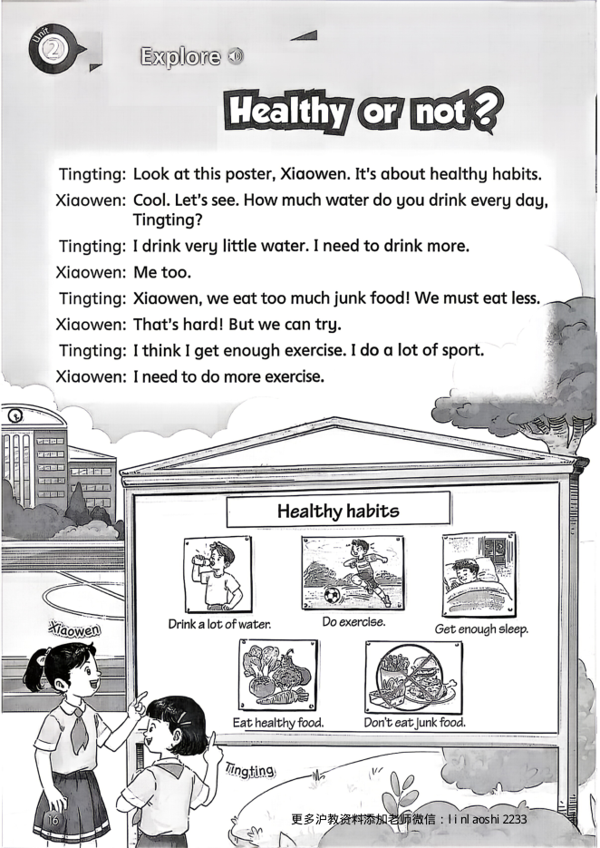
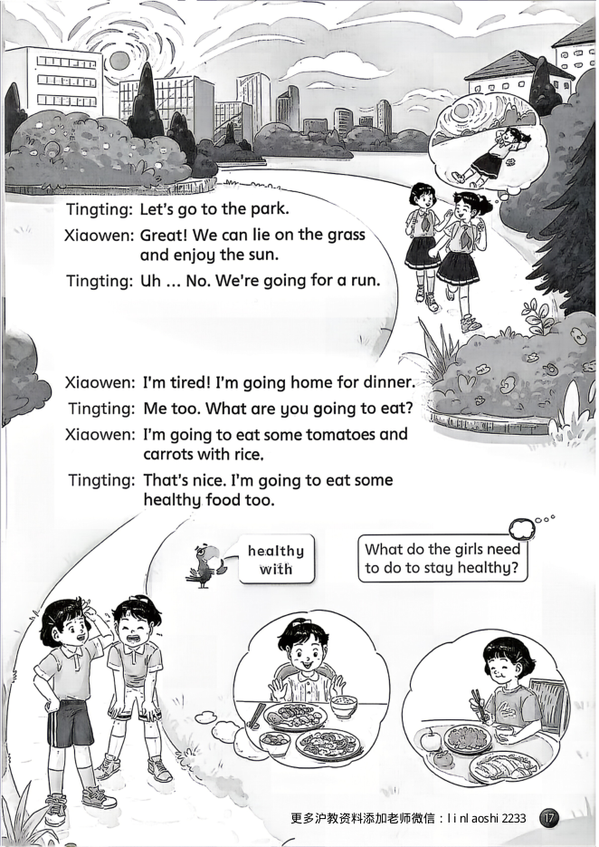
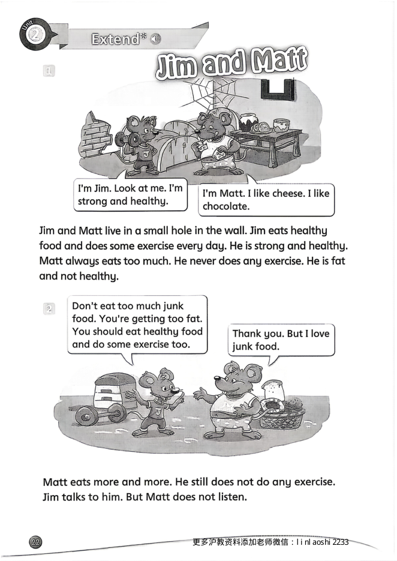
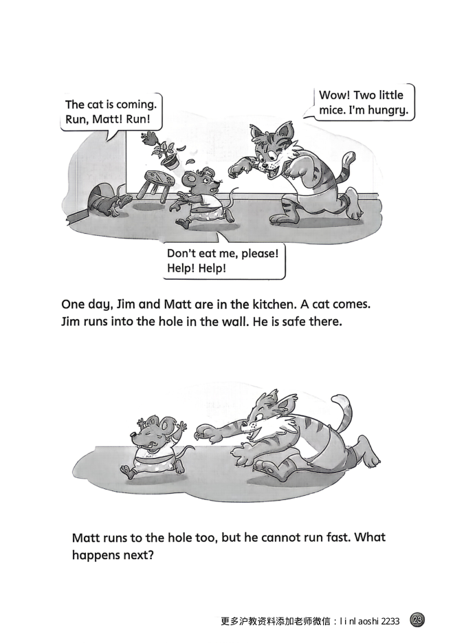

课文 Explore 主课文朗读


点一下书页上的句子，就能听到这一句的发音
拓展 Extend 拓展阅读朗读


点一下书页上的句子，就能听到这一句的发音
单词 Words 点单词听发音
Do exercise.
Eat healthy food.
Drink a lot of water.
Get enough sleep.
Strong.
What's there?
About?
Habit.
Junk food.
Must.
Less.
Hard.
Try.
Lie.
Ill.
A glass of meat too.